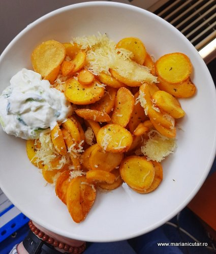
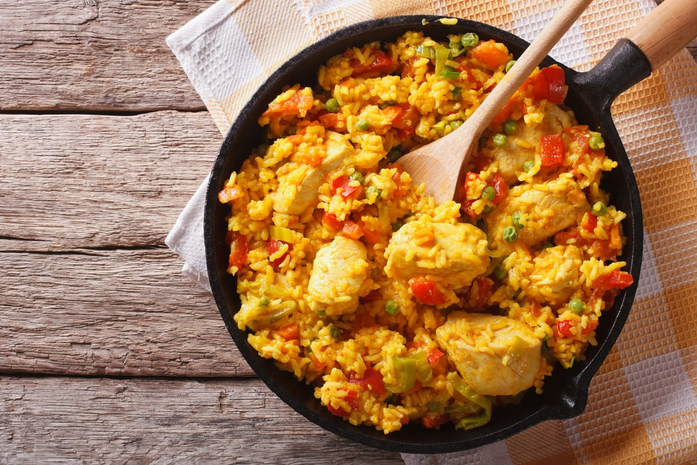
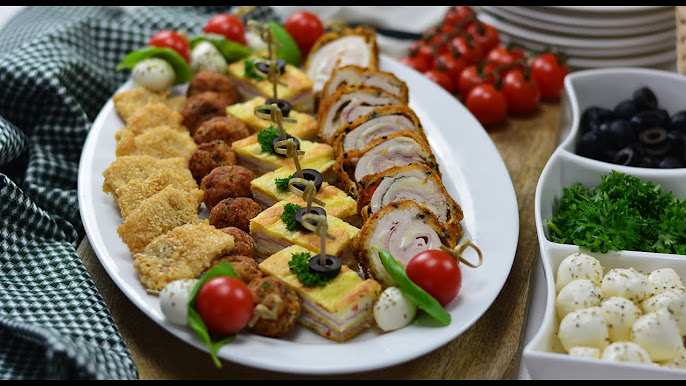
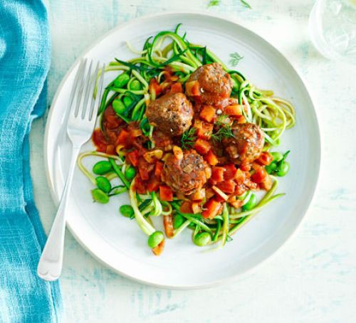

Retete
Cartofi

Această rețetă clasică aduce un plus de gust și textură cartofilor printr-un strat generos de brânză topită și arome bogate de usturoi. Este o alegere perfectă pentru orice masă, de la mesele de sărbători la cinele în familie.
Orez

Un fel de mâncare reconfortant și sățios, care îmbină aroma bogată a orezului cu prospețimea legumelor. Orezul este copt împreună cu legume precum morcovii, ceapa, ardeiul gras și mazărea, într-un amestec delicios și sănătos.
Carne

Un fel principal simplu și reconfortant, în care pieptul de pui suculent este copt alături de cartofi moi și aromate, îmbibate cu aromele proaspete de rozmarin și usturoi. Este o combinație clasică care nu dezamăgește niciodată.
Salata

Această salată clasică este o combinație perfectă de arome și texturi. Frunzele crocante de salată romano sunt amestecate cu bucăți de pui la grătar, crutoane de pâine prăjită și parmezan ras, toate acoperite cu un dressing cremos și delicios.